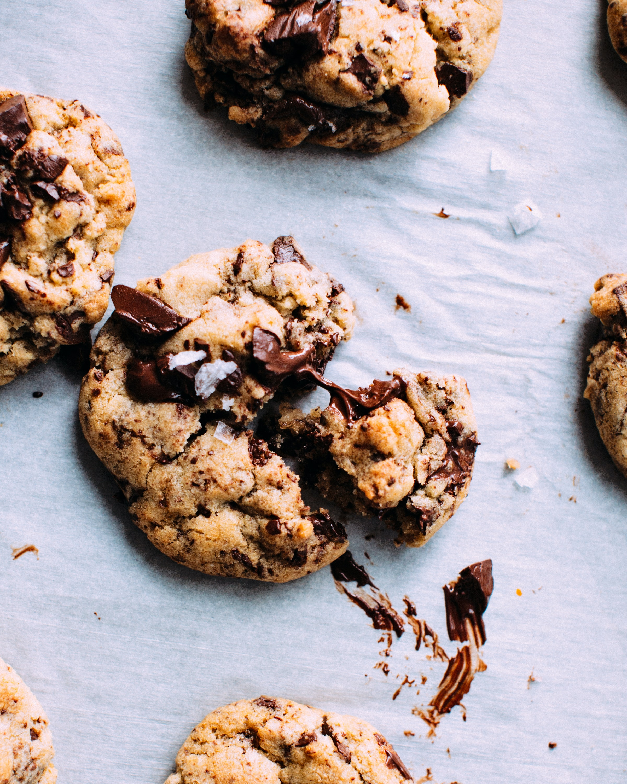

Chocolate Chip Cookies Recipe
The best choco-chip cookies you will ever eat!
Below, you'll find the recipe on how to make the best chocolate chip cookies ever!

If you're ever craving a little sweet treat, but don't know what to eat,
look no further than this famous chocolate-chip cookie recipe. These are so scrumptious and will be sure to
satisfy your sweet tooth. The best part? These come together so quickly-- you'll have the
most perfect gooey chocolatey cookies in no time.
Most of the ingredients for this recipe are pantry essentials and you'll most
likely find that you already have them on hand. Below is a full list of the
ingredients you will need.
Ingredients
- 1 cup salted butter (softened)
- 1 cup white (granulated) sugar
- 1 cup light brown sugar packed
- 2 tsp pure vanilla extract
- 2 large eggs
- 3 cups all-purpose flour
- 1 tsp baking soda
- 1/2 tsp baking powder
- 1 tsp seal salt
- 2 cups chocolate chips
Instructions
- Preheat oven to 375 degrees F. Line a baking pan with parchment paper and set aside.
- In a separate bowl mix flour, baking soda, salt, baking powder. Set aside.
- Cream together butter and sugars until combined.
- Beat in eggs and vanilla until fluffy.
- Mix in the dry ingredients until combined.
- Add 12 oz package of chocolate chips and mix well.
- Roll 2-3 TBS (depending on how large you like your cookies) of dough at a time into balls and place them evenly spaced on your prepared cookie sheets. (alternately, use a small cookie scoop to make your cookies).
- Bake in preheated oven for approximately 8-10 minutes. Take them out when they are just BARELY starting to turn brown.
- Let them sit on te bakinh pan for two minutes before removing to cooling rack.